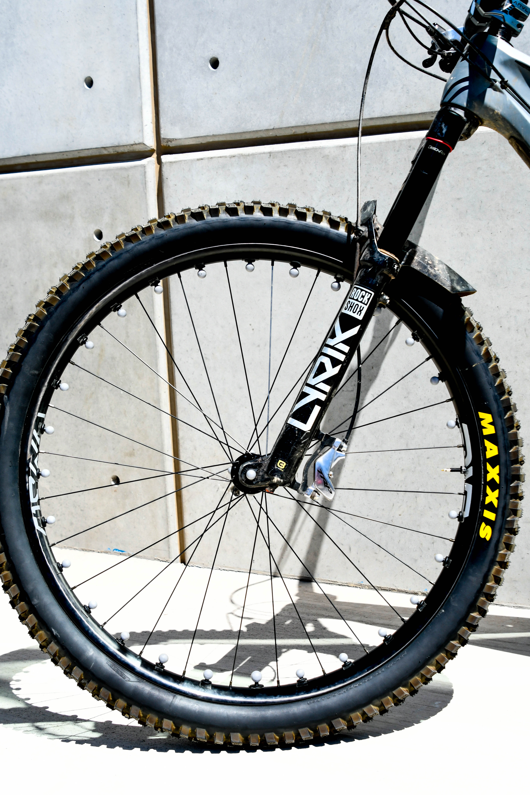
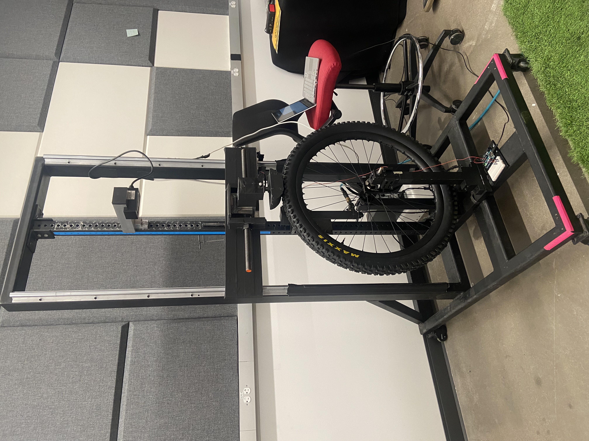
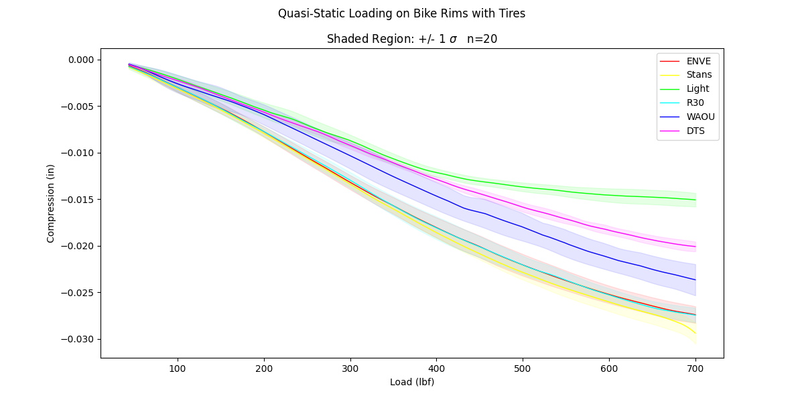

Building testing fixtures and methods to turn MTB product performance from feelings into real data.
Custom load and impact testing fixtures used to evaluate mountain bike wheel compliance and damping correlating lab data with real-world ride data to inform rider wheel selection.
The Problem
Riders and reviewers often describe wheels in subjective terms such as "stiff," "compliant," "harsh" but Blister Labs wanted to back those impressions with repeatable, quantifiable data so wheel comparisons and recommendations could be based on measurements rather than feel alone. No two riders are the same meaning often what works for one rider might not be the right fit for another. Quantifying wheel performance means we can reccomend wheels based on rider weight, style, agression, and the trails they ride most.


Left: Motion capture wheel setup. Right: Rider field testing.
Approach
The work split into two halves: building and testing wheels in a controlled and repeatable lab setting, and then tying that lab data back to how a wheel actually behaves on trail.
| FIXTURING | Designed and built custom load and impact fixtures capable of isolating specific compliance and damping characteristics per wheel, controlling for variables that would otherwise muddy comparisons. |
| DATA | Integrated sensor and motion capture data streams so lab measurements could be directly correlated against real-world riding data. |
| OUTPUT | Comparisons across wheel designs and materials, used to inform rider specific wheel selection recommendations. |


Left: Controlled lab impact setup. Right: Lab radial impact test data.
Outcome
Delivered a repeatable testing process that turned subjective wheel "feel" into comparable data, used across multiple wheel designs and materials to support Blister Labs' rider recommendations.
Documentation
Write-up of the wheel testing methodology and results.